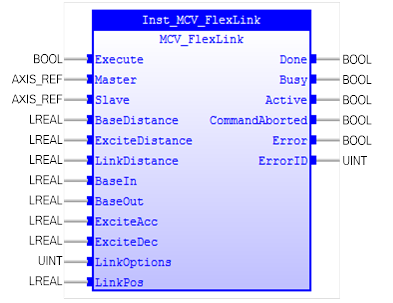

Generates movement of an axis according to a defined profile.

MCV_FlexLink is used to generate movement of an axis according to a defined profile. The motion is linked to the measured motion of link axis (master axis). The profile is made up of 2 parts, the base move and the excitation move both of which are specified in the parameters. The base move is a constant speed movement. The excitation movement uses sinusoidal profile and is applied on top of the base movement.
When MCV_FlexLink is executed, link axis changes to ‘SynchronizedMotion’
Make sure the input and output parameters are of data type indicated in the table below.
‘LinkDistance’ is in the user units of the link axis and should always be specified as a positive distance.
‘LinkOptions‘ is used for starting (bits 1, 2, 8 and 9), it may be combined with the link options for repetetion (bits 4 and 8) and direction.
MCV_FlexLink is equivalent to TrioBASIC command FLEXLINK. Please refer to TrioBasic Help for more information.
|
Name |
Data Type |
Description |
|
INPUTS |
||
|
Execute |
BOOL |
Start the motion at rising edge |
|
Master |
AXIS_REF |
Reference to the master axis. It is the same as ‘link_axis’ in FLEXLINK. Please refer to TrioBasic Help on FLEXLINK for more information. |
|
Slave |
AXIS_REF |
Reference to the slave axis |
|
BaseDistance |
LREAL |
The distance the axis should move at a constant speed. |
|
ExciteDistance |
LREAL |
The distance the axis should perform the profiled move. |
|
LinkDistance |
LREAL |
The percentage of the base move time that completes before the excitation move starts |
|
BaseIn |
LREAL |
The percentage of the base move time that completes after the excitation move completes. |
|
BaseOut |
LREAL |
Bit value options to customize how your MCV_FlexLink operates. See more information from ‘Trio Basic Help’ about MOVELINK command. |
|
ExciteIn |
LREAL |
The percentage of the excitation move time used for acceleration |
|
ExciteOut |
LREAL |
The percentage of the excitation move time used for deceleration |
|
LinkOptions |
UINT |
Bit value options to customize how your MCV_FlexLink operates. See more information from ‘Trio Basic Help’ about FlexLINK command. |
|
LinkPosition |
LREAL |
LinkOptions bit 1 - the absolute position on the link axis in user UNITS where it is to be start. LinkOptions bit 9 – the registration channel to start the movement on |
|
OUTPUTS |
||
|
Done |
BOOL |
The FB is not finished and new output value is to be expected. |
|
Busy |
BOOL |
The FB is not finished and new output values are to be expected |
|
Active |
BOOL |
Indicates that the FB has control on the axis |
|
CommandAborted |
BOOL |
'Command' is aborted by another command |
|
Error |
BOOL |
Signals that an error has occurred within the FB |
|
ErrorID |
UINT |
Error identification |